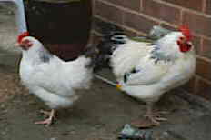
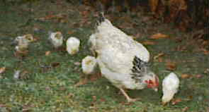

These were our chickens. They were Light Sussex bantams.
They were called
They lived in our garden for a year or so quite a while ago, and then the fox ate them. Sorry, but it's true.
That's enough about chickens for now. For more information, see the famous work by Shakespeare on the subject: Timon O Fat Hens.